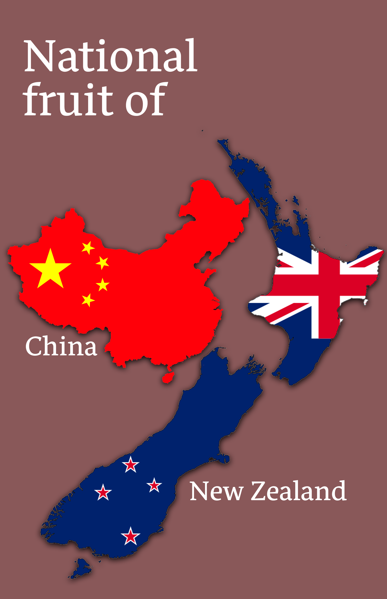
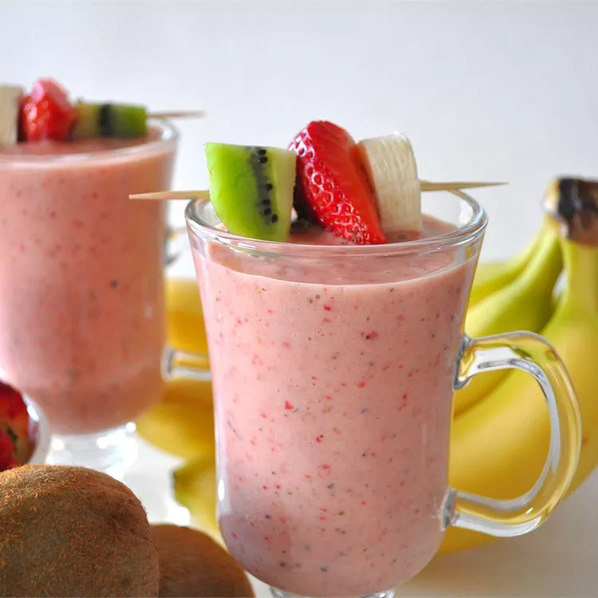
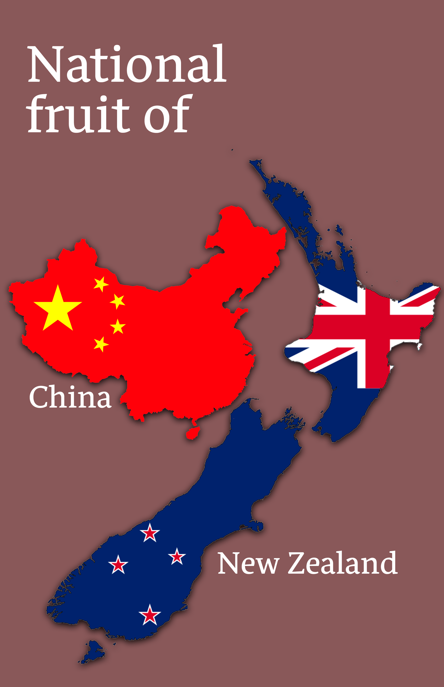
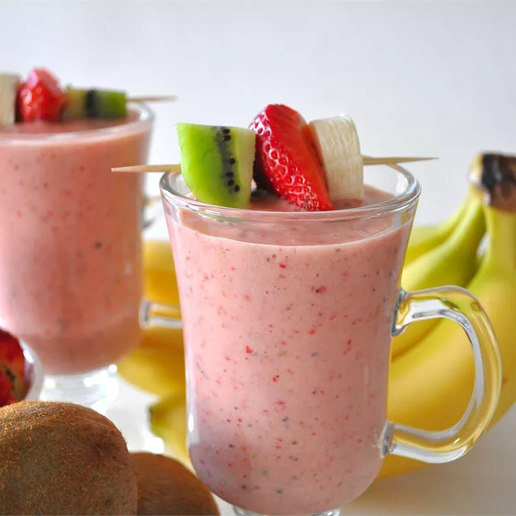

The
Kiwi
Kiwi is a fruit that is native to China, but is now cultivated
in many regions
around the world, including New Zealand, where
it is also known as "kiwifruit".
Kiwis are small and oval-shaped
with brown, fuzzy skin and green flesh inside.
They have a sweet
and tangy flavor and are often eaten raw or used in a
variety of
dishes, such as fruit salads, smoothies, and desserts. Kiwis are
high in
vitamin C, vitamin K, and dietary fiber, and are also a
good source of other
essential nutrients. They are known for their
health benefits, including improving
digestion, boosting the immune
system, and promoting heart health. Some popular
types of kiwis
include Hayward, Gold, and Baby kiwis.
Kiwi Smoothie
Recipe
(click image)
 


